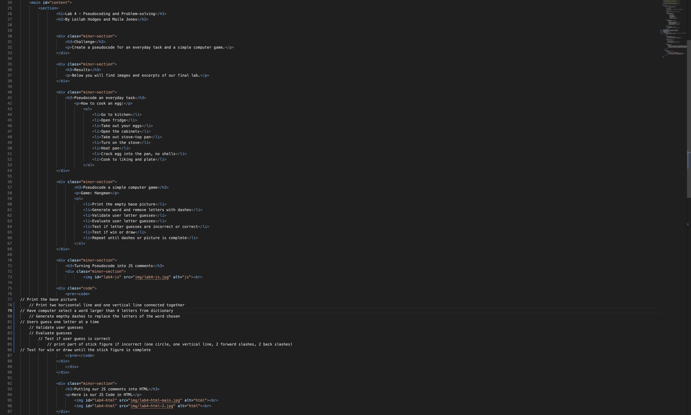
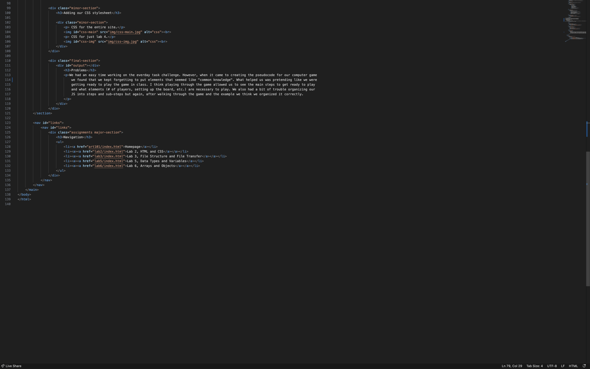
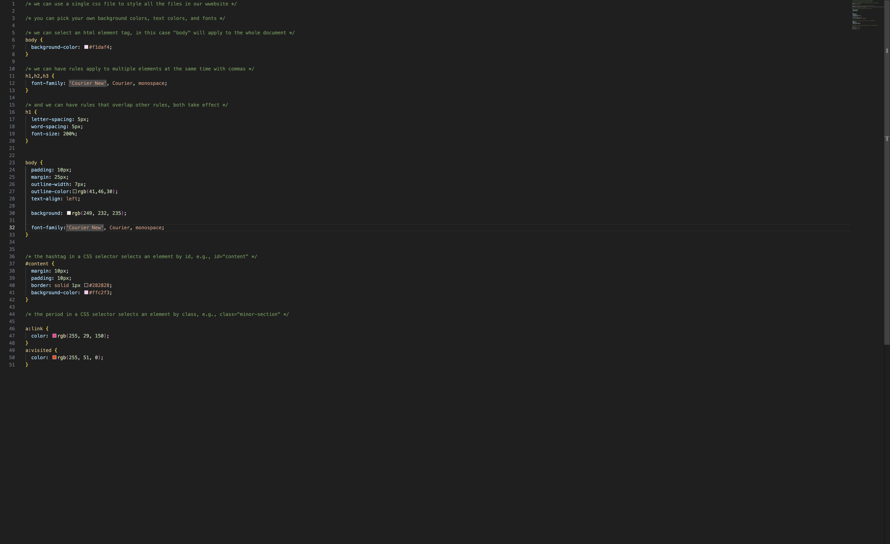
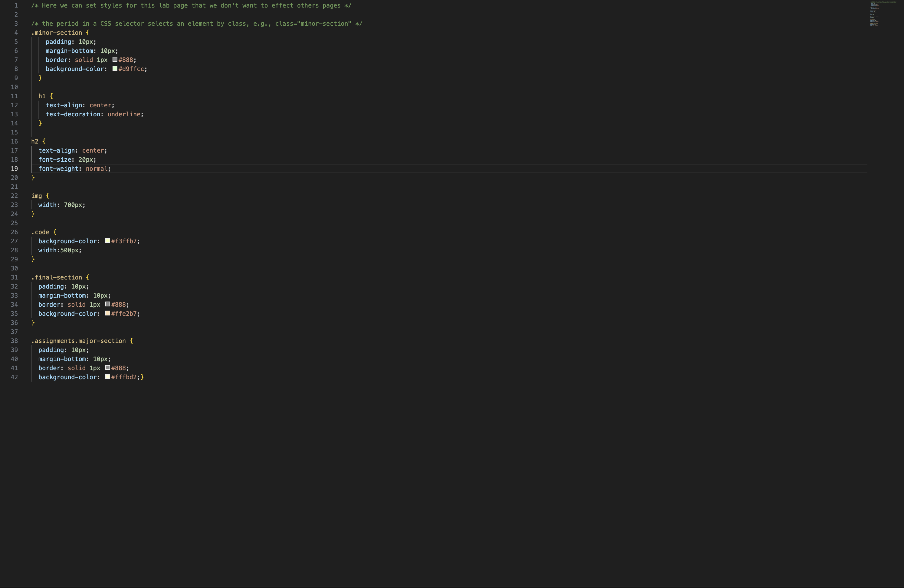

Lab 4 - Pseudocoding and Problem-solving
By Leilah Hodges and Maile Jones
Challenge
Create a pseudocode for an everyday task and a simple computer game.
Results
Below you will find images and excerpts of our final lab.
Pseudocode an everyday task
How to cook an egg:
- Go to kitchen
- Open fridge
- Take out your eggs
- Open the cabinets
- Take out stove-top pan
- Turn on the stove
- Heat pan
- Crack egg into the pan, no shells
- Cook to liking and plate
Pseudocode a simple computer game
Game: Hangman
- Print the empty base picture
- Generate word and remove letters with dashes
- Validate user letter guesses
- Evaluate user letter guesses
- Test if letter guesses are incorrect or correct
- Test if win or draw
- Repeat until dashes or picture is complete
Turning Pseudocode into JS comments
// Print the base picture
// Print two horizontal line and one vertical line connected together
// Have computer select a word larger than 4 letters from dictionary
// Generate empthy dashes to replace the letters of the word chosen
// Users guess one letter at a time
// Validate user guesses
// Evaluate guesses
// Test if user guess is correct
// print part of stick figure if incorrect (one circle, one vertical line, 2 forward slashes, 2 back slashes)
// Test for win or draw until the stick figure is complete
Putting our JS comments into HTML
Here is our JS Code in HTML

Adding our CSS stylesheet
CSS for the entire site.
CSS for just lab 4.
Problems
We had an easy time working on the everday task challenge. However, when it came to creating the pseudocode for our computer game we found that we kept forgetting to put elements that seemed like "common knowledge". What helped us was pretending like we were getting ready to play the game in class. I think playing through the game allowed us to see the main steps to get ready to play and what elements (# of players, setting up the board, etc.) are necessary to play. We also had a bit of trouble organizing our JS into steps and sub-steps but again, after walking through the game and the example we think we organized it correctly.